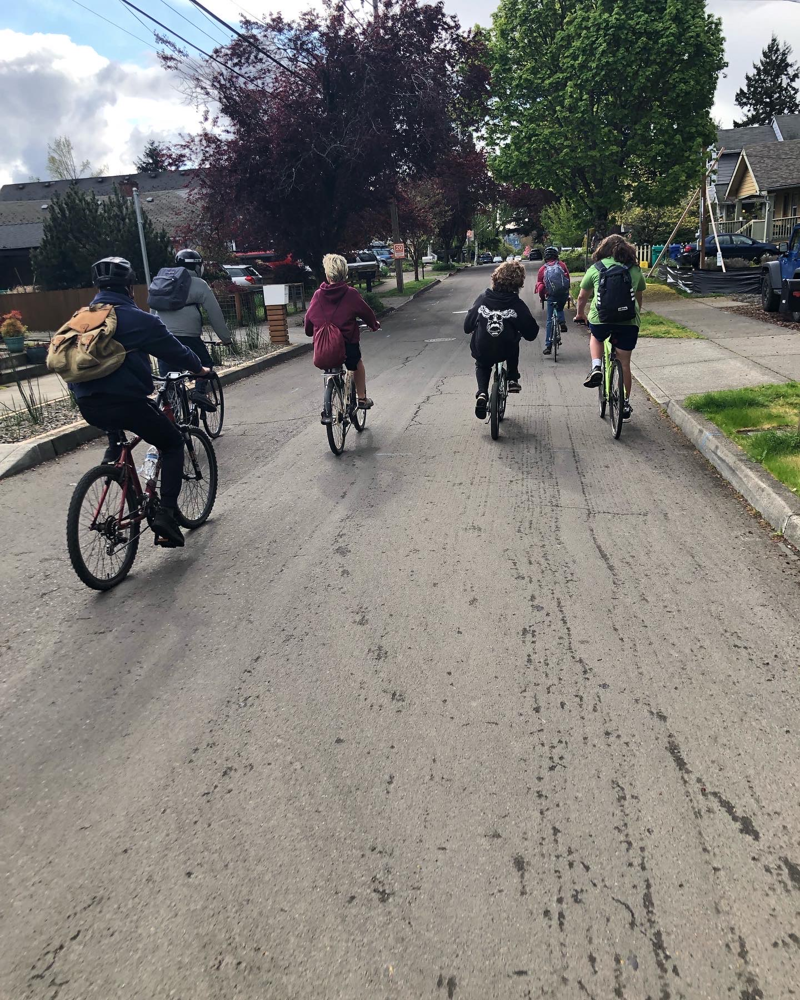

I have lots of different interests besides computers(even though thats where I spend lots of my time).

As a Portlander born and raised I love to bike around. I was taught to bike from a young age and there were lots of bike rides happening that my family and I went on. As I grew up I carried that spirit with me and now I love to bike with my friends and go see new things. Pictured to the left is a ride I took through the Roman country side with my father on our trip to Italy.
Here is another photo of a bike ride my friends and I did around Portland and down the spring water corridor. One of the things I love so much about Portland is how nice it is to bike around. There are many amazing bike trails and even when biking through neighborhoods theres always lots of greenery year round.
back